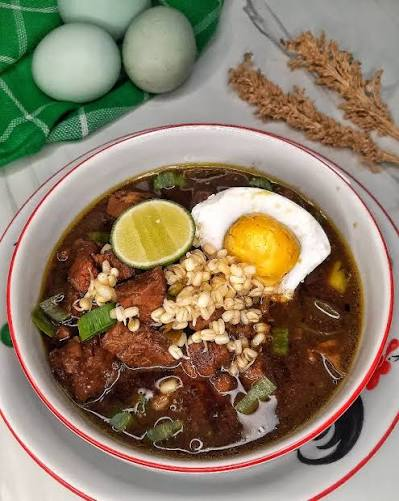
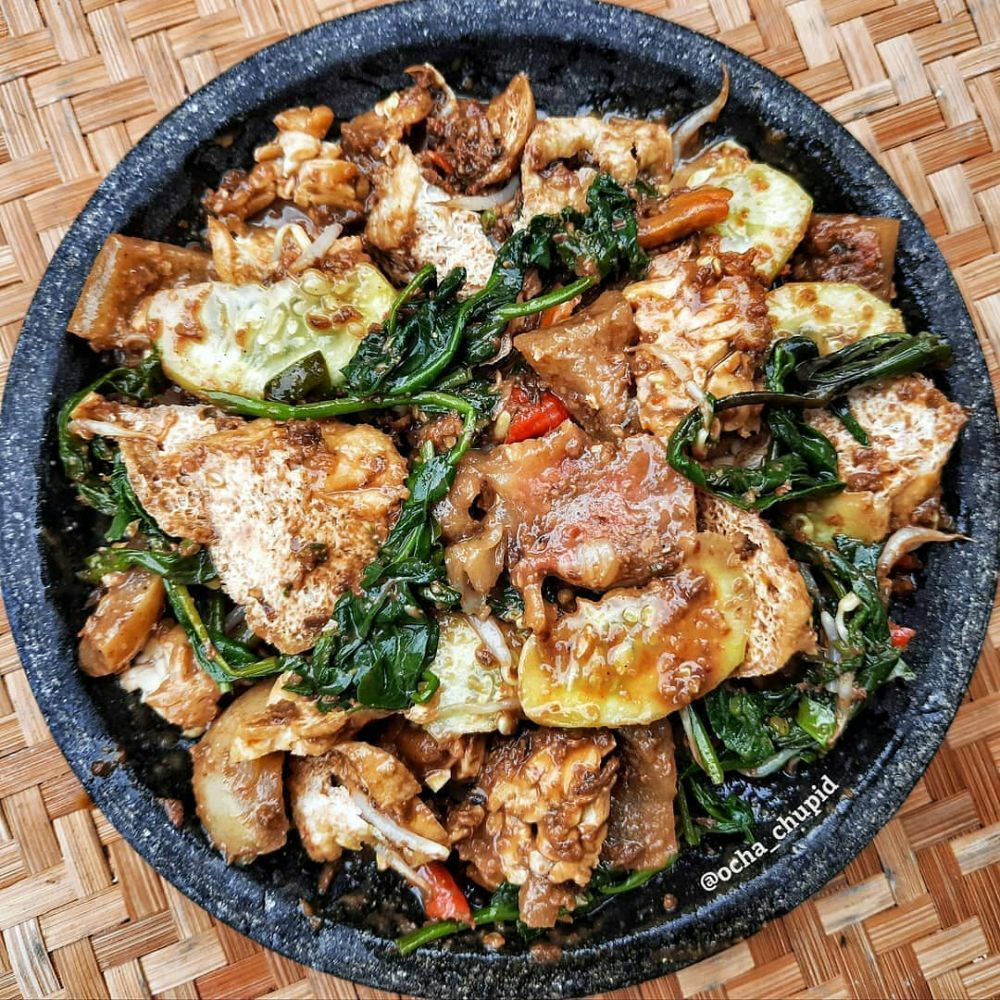
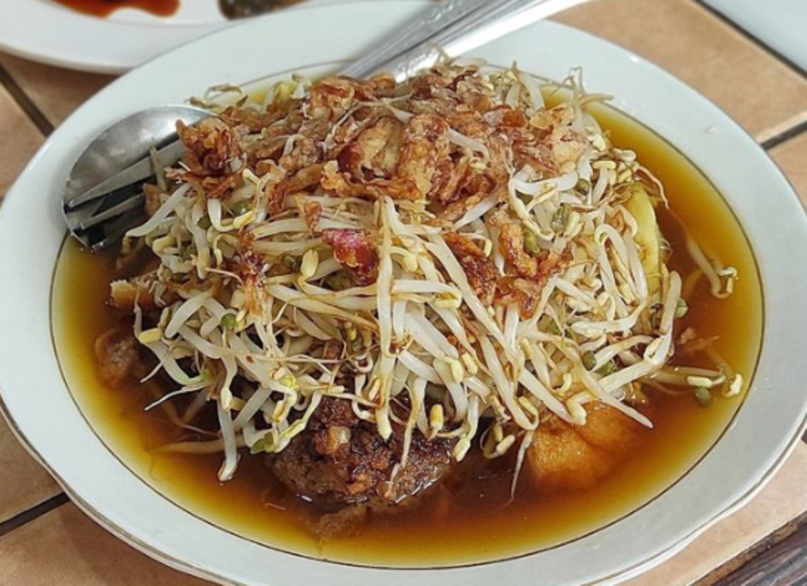
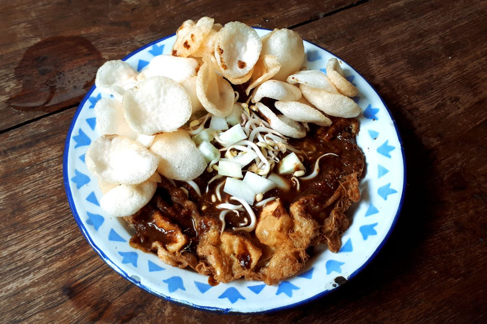
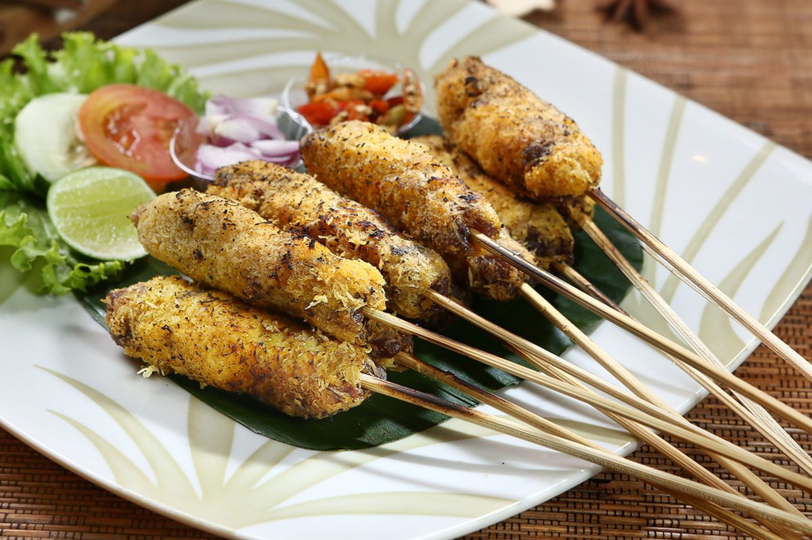

Culinary Heritage
Surabaya Cuisine
Distinctive flavor profiles rooted in fermented shrimp paste (petis), black keluak broth, and traditional open-flame cooking.

Signature Broth
Rawon
An aromatic braised beef soup distinguished by its deep black broth, derived from fermented keluak (Pangium edule) seeds. Simmered alongside lemongrass, galangal, kaffir lime leaf, and shallots.
Traditionally served alongside short-sprouted mung beans, salted duck egg, freshly ground chili sambal, and crispy shrimp crackers (kerupuk udang).
Documented Dishes
Essential Preparations

Traditional Salad
Rujak Cingur
A regional specialty consisting of cooked cow muzzle (cingur), cucumber, young mango, water spinach, tofu, and compressed rice cakes (lontong), dressed in a rich dressing of black petis shrimp paste, ground peanuts, and chili.

Market Fare
Lontong Balap
Steamed rice cake slices accompanied by blanched bean sprouts, fried firm tofu, and lentho (fried mung bean cakes), immersed in a light savory shallot and garlic broth with petis reduction.

Street Specialty
Tahu Tek
Crispy fried egg-dipped tofu and compressed rice, topped with fresh bean sprouts and doused in a thick sauce combining sweet soy sauce (kecap manis), petis paste, and ground roasted peanuts.

Charcoal Skewers
Sate Klopo
Skewered cuts of beef or chicken coated with seasoned grated coconut prior to charcoal grilling. The coconut caramelizes over the open heat, imparting a distinct smoky sweetness served with spicy peanut relish.
Culinary Profile
Key Flavor Characteristics
The Role of Petis
Petis udang—a thick, black paste produced by reducing fermented shrimp cooking liquids—functions as the savory foundation across Surabayan street cooking, providing unami depth distinct from central Javanese culinary traditions.
Cooking Traditions
Recipes rely heavily on open-charcoal grilling, mortar-and-pestle grinding of spice pastes, and extended simmering, preserving generational food culture across historical urban neighborhoods.